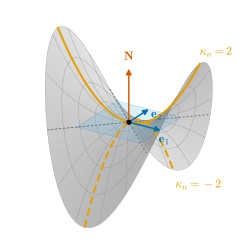
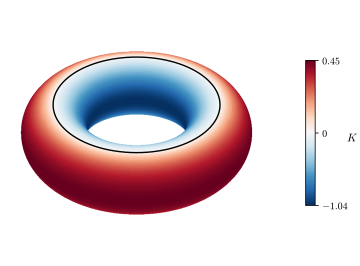

0.4 How Surfaces Bend: Curvature
Goals
- Gauss map과 shape operator \(W_p = -d\mathbf{N}_p\)가 무엇을 재는지 그림으로 설명할 수 있다.
- normal curvature와 principal curvature의 관계(Euler's formula)를 이해하고 saddle surface에서 계산할 수 있다.
- Gaussian curvature \(K\)와 mean curvature \(H\)를 정의하고, running example의 값과 점의 분류(elliptic, hyperbolic, parabolic)를 말할 수 있다.
- mesh에서 curvature를 추정하는 cotangent formula와 angle defect, mean curvature flow가 이 정의와 어떻게 이어지는지 설명할 수 있다.
Prerequisites
- Section 0.2: plane curve의 signed curvature(Definition 0.2.4)
- Section 0.3: tangent plane과 unit normal vector(Definition 0.3.3, Example 0.3.4), first fundamental form(Definition 0.3.5)
- linear algebra: \(2 \times 2\) symmetric matrix의 eigenvalue와 eigenvector, determinant와 trace
Motivation
Section 0.3에서 평면과 cylinder는 \(E = G = 1\), \(F = 0\)인 parametrization을 가져서 surface 안에서 잰 길이, 각, 넓이가 같았다(Example 0.3.7). 그런데 cylinder는 분명히 휘어 있다. 둘을 구별하는 것은 무엇인가?
답은 normal vector다. 평면 위에서는 어디로 움직여도 \(\mathbf{N}\)이 그대로이지만, cylinder 위에서 둘레를 따라 움직이면 \(\mathbf{N}\)이 돈다. 곡선의 curvature가 unit tangent vector \(\mathbf{t}\)가 도는 빠르기였듯이(Section 0.2), surface의 curvature는 unit normal vector \(\mathbf{N}\)이 기우는 빠르기다. 다만 surface에서는 움직이는 방향이 여럿이므로 빠르기가 수 하나가 아니라 linear map이 된다.
The Gauss Map and the Shape Operator
Definition 0.4.1 (Gauss map and shape operator). unit normal vector가 정해진 surface \(S\)에서, 점 \(p\)를 단위벡터 \(\mathbf{N}(p)\)로 보내는 map \(\mathbf{N}\colon S \to S^2\)을 Gauss map(가우스 사상)이라 한다. \(w \in T_pS\)에 대해 \(\alpha(0) = p\), \(\alpha'(0) = w\)인 \(S\) 위의 곡선 \(\alpha\)를 잡고
\[ d\mathbf{N}_p(w) = \frac{d}{dt}\Big|_{t=0} \mathbf{N}\big(\alpha(t)\big) \]
로 정하면 이 값은 곡선의 선택에 무관하고 \(w\)에 대해 linear이다. \(\abs{\mathbf{N}} = 1\)이므로 \(d\mathbf{N}_p(w) \perp \mathbf{N}(p)\), 곧 \(d\mathbf{N}_p(w) \in T_pS\)이다. linear map
\[ W_p = -d\mathbf{N}_p\colon T_pS \to T_pS \]
를 \(p\)에서의 shape operator(형태작용소)라 한다.
\(W_p(w)\)는 “\(w\) 방향으로 한 걸음 갈 때 \(\mathbf{N}\)이 얼마나, 어느 쪽으로 기우는가”를 잰다. 앞의 마이너스 부호는 surface가 \(\mathbf{N}\) 쪽으로 휠 때 curvature가 양수가 되도록 붙인 것이다(아래 Definition 0.4.3). 곡선을 따라 미분해서 정의하는 것은 정확한 정의 그대로다. 그 미분이 잘 정의된다는 것을 보이려면 surface 사이의 map의 differential이 필요하다(Definition 6.4.1, Proposition 8.1.4).
Example 0.4.2 (shape operators of the plane, sphere, and cylinder).
- 평면: \(\mathbf{N}\)이 상수이므로 \(W_p = 0\)이다.
- sphere \(S^2(r)\)(바깥쪽 \(\mathbf{N} = \mathbf{x}/r\)): \(\mathbf{N}(\alpha(t)) = \alpha(t)/r\)이므로 \(d\mathbf{N}_p(w) = w/r\), 곧 \(W_p = -\tfrac1r\,\mathrm{id}\)이다. 모든 방향으로 똑같이 휜다.
- cylinder(바깥쪽 \(\mathbf{N} = (\cos u, \sin u, 0)\)): 축 방향(\(\mathbf{x}_v\))으로 가면 \(\mathbf{N}\)이 그대로이므로 \(W_p(\mathbf{x}_v) = 0\)이다. 둘레 방향(\(\mathbf{x}_u\))으로 가면 \(\mathbf{N}_u = (-\sin u, \cos u, 0) = \mathbf{x}_u/r\)이므로 \(W_p(\mathbf{x}_u) = -\tfrac1r\,\mathbf{x}_u\)이다. basis \((\mathbf{x}_u, \mathbf{x}_v)\)에서 \(W_p = \diag(-1/r,\ 0)\)이다.
Verification: verify/v-0-4-curvature.py
\(W_p\)에는 중요한 성질이 하나 있다. 모든 \(w_1, w_2 \in T_pS\)에 대해 \(\inner{W_p w_1}{w_2} = \inner{w_1}{W_p w_2}\)이다(self-adjoint, Theorem 8.1.10). 그래서 \(T_pS\)의 orthonormal basis에서 \(W_p\)의 행렬은 symmetric matrix이고, 실수 eigenvalue 두 개와 서로 수직인 eigenvector를 가진다.
Normal Curvature and Principal Curvatures
한 방향의 휘어짐은 곡선으로 볼 수 있다. 점 \(p\)와 단위 tangent vector \(w\)에 대해, \(w\)와 \(\mathbf{N}(p)\)가 펼치는 평면으로 surface를 자르면 plane curve가 나온다. 이것을 \(w\) 방향의 normal section(법단면)이라 한다(Figure 0.4.1). 이 곡선의 signed curvature를 \(\mathbf{N}\) 쪽으로 휠 때 양수가 되도록 잰 값이 \(w\) 방향으로 surface가 휘는 정도다.
Definition 0.4.3 (normal curvature and principal curvatures). 단위벡터 \(w \in T_pS\)에 대해 \(\kappa_n(w) = \inner{W_p(w)}{w}\)를 \(w\) 방향의 normal curvature(법곡률)라 한다. \(W_p\)의 두 eigenvalue \(\kappa_1 \ge \kappa_2\)를 principal curvature(주곡률), 그 eigenvector의 방향을 principal direction(주방향)이라 한다.
\(\kappa_n(w)\)는 위의 normal section의 curvature와 같다. 더 일반적으로, \(p\)에서 \(w\) 방향으로 지나가는 \(S\) 위의 unit-speed curve는 어떻게 그리든 가속도의 \(\mathbf{N}\) 성분이 \(\kappa_n(w)\)다(Meusnier's theorem, Theorem 8.2.5). quadratic form \(\mathrm{II}_p(w) = \inner{W_p(w)}{w}\)를 second fundamental form(제2기본형식)이라 하며, 단위벡터에서의 값이 normal curvature다.
principal direction의 단위벡터를 \(\mathbf{e}_1, \mathbf{e}_2\)라 하고 \(w = \cos\theta\,\mathbf{e}_1 + \sin\theta\,\mathbf{e}_2\)로 쓰면
이다(Euler's formula, Theorem 8.3.5). 곧 모든 방향의 휘어짐은 두 수 \(\kappa_1, \kappa_2\)로 정해지고, \(\kappa_1\)은 normal curvature의 최댓값, \(\kappa_2\)는 최솟값이다. symmetric matrix의 eigenvalue가 Rayleigh quotient의 최대·최소인 것과 같은 이야기다.

Example 0.4.4 (saddle surface at the origin). \(z = f(x, y) = x^2 - y^2\)는 원점에서 tangent plane이 \(z = 0\)이고 \(\mathbf{N} = (0, 0, 1)\)이다. 이렇게 surface가 tangent plane 위의 그래프로 놓여 있으면 원점의 \(W_p\)는 \(f\)의 Hessian matrix와 같다(Proposition 8.2.10): \(W_p = \begin{pmatrix} 2 & 0 \\ 0 & -2 \end{pmatrix}\). 따라서 \(\kappa_1 = 2\)(\(x\) 방향), \(\kappa_2 = -2\)(\(y\) 방향)이고 (0.4.1)은 \(\kappa_n = 2\cos^2\theta - 2\sin^2\theta = 2\cos 2\theta\)이다. \(\theta = \pm\pi/4\)에서 \(\kappa_n = 0\)인데, 실제로 직선 \(x = \pm y\), \(z = 0\)이 surface에 놓여 있다.
Verification: verify/v-0-4-curvature.py
Gaussian Curvature and Mean Curvature
Definition 0.4.5 (Gaussian curvature and mean curvature).
\[ K = \kappa_1\kappa_2 = \det W_p, \qquad H = \frac{\kappa_1 + \kappa_2}{2} = \frac12\tr W_p \]
를 \(p\)에서의 Gaussian curvature(가우스 곡률)와 mean curvature(평균곡률)라 한다. \(K \gt 0\)인 점을 elliptic point(타원점), \(K \lt 0\)인 점을 hyperbolic point(쌍곡점), \(K = 0\)이지만 \(W_p \neq 0\)인 점을 parabolic point(포물점)라 한다.
\(\mathbf{N}\)을 \(-\mathbf{N}\)으로 바꾸면 \(W_p\)가 \(-W_p\)가 되므로 \(\kappa_1, \kappa_2\)와 \(H\)의 부호가 바뀌고, \(K = \det W_p\)는 그대로다(\(2 \times 2\) 행렬이라 \(\det(-W) = \det W\)). 그래서 \(H\)를 말할 때는 언제나 \(\mathbf{N}\)의 방향을 함께 밝혀야 한다. \(K\)의 부호는 모양을 직접 말해 준다(Figure 0.4.2).
- elliptic(\(K \gt 0\)): 모든 방향으로 같은 쪽으로 휜다. 구, 둥근 언덕 꼭대기.
- hyperbolic(\(K \lt 0\)): 방향에 따라 반대쪽으로 휜다. 말안장, 산의 고갯마루.
- parabolic(\(K = 0\), \(W_p \neq 0\)): 한 방향으로는 휘고 다른 방향으로는 휘지 않는다. cylinder.
계산에서는 \(W_p\)를 basis \((\mathbf{x}_u, \mathbf{x}_v)\)로 적는다. second fundamental form의 coefficient를 \(L = \inner{\mathbf{x}_{uu}}{\mathbf{N}}\), \(M = \inner{\mathbf{x}_{uv}}{\mathbf{N}}\), \(N = \inner{\mathbf{x}_{vv}}{\mathbf{N}}\)이라 하면(coefficient \(N\)과 벡터 \(\mathbf{N}\)은 다른 것이다) \(W_p\)의 행렬은 \(\begin{pmatrix} E & F \\ F & G \end{pmatrix}^{-1}\begin{pmatrix} L & M \\ M & N \end{pmatrix}\)이고, 따라서
이다(Theorem 8.5.5). first fundamental form의 행렬로 “나누는” 것은, 좌표 basis \((\mathbf{x}_u, \mathbf{x}_v)\)가 orthonormal이 아니기 때문이다.
Example 0.4.6 (\(K\) and \(H\) of the running examples).
- sphere(바깥쪽 \(\mathbf{N}\)): \(L = -r\), \(M = 0\), \(N = -r\sin^2\theta\). \(\kappa_1 = \kappa_2 = -1/r\), \(K = 1/r^2\), \(H = -1/r\). 바깥쪽 \(\mathbf{N}\)에서 멀어지는 쪽으로 휘므로 principal curvature가 음수다.
- cylinder(바깥쪽 \(\mathbf{N}\)): \(L = -r\), \(M = N = 0\). \(\kappa_1 = 0\), \(\kappa_2 = -1/r\), \(K = 0\), \(H = -1/(2r)\). 모든 점이 parabolic이다.
- saddle surface의 원점(위쪽 \(\mathbf{N}\)): \(K = -4\), \(H = 0\). hyperbolic point다.
- torus of revolution(\(\mathbf{N} = \mathbf{x}_u \times \mathbf{x}_v/\abs{\mathbf{x}_u \times \mathbf{x}_v}\), 안쪽): \(K = \dfrac{\cos u}{r(R + r\cos u)}\), \(H = \dfrac{R + 2r\cos u}{2r(R + r\cos u)}\). 바깥쪽 절반(\(\cos u \gt 0\))은 elliptic, 안쪽 절반은 hyperbolic, 맨 위와 맨 아래의 원 \(u = \pm\pi/2\)는 parabolic이다(Figure 0.4.2).
Verification: verify/v-0-4-curvature.py

cylinder와 평면은 Example 0.3.7에서 길이를 보존하는 map으로 이어졌다. 그런데 \(H\)는 평면에서 \(0\), cylinder에서 \(-1/(2r)\)로 다르다. 그러므로 \(H\)는 intrinsic이 아니다. \(K\)는 둘 다 \(0\)이다. 이것이 우연인지가 다음 절의 질문이다.
Summary
- Gauss map \(\mathbf{N}\colon S \to S^2\)의 변화율에 마이너스를 붙인 shape operator \(W_p = -d\mathbf{N}_p\)가 surface가 휘는 정도를 잰다. \(W_p\)는 self-adjoint다.
- 방향 \(w\)의 normal curvature는 \(\inner{W_p w}{w}\)이고, 그 최댓값과 최솟값이 principal curvature \(\kappa_1 \ge \kappa_2\)다 (0.4.1).
- \(K = \kappa_1\kappa_2\)는 \(\mathbf{N}\)의 방향에 무관하고 부호로 점을 분류한다. \(H = (\kappa_1 + \kappa_2)/2\)는 \(\mathbf{N}\)을 뒤집으면 부호가 바뀐다. 좌표 공식은 (0.4.2)다.
- sphere \(K = 1/r^2\), cylinder \(K = 0\), saddle 원점 \(K = -4\), torus of revolution은 바깥쪽 \(K \gt 0\)과 안쪽 \(K \lt 0\)이다.
- mesh에서는 cotangent formula로 \(2H\mathbf{N} = \Delta_S\mathbf{x}\)를, angle defect로 \(K\)를 추정하고, mean curvature flow로 smoothing한다.
다음 절에서는 \(K\)가 \(\mathbf{N}\) 없이 \(E, F, G\)만으로 정해진다는 Gauss의 발견(Theorema Egregium)을 본다. 그 결과로 surface 위의 “직선”(geodesic), 벡터를 평행하게 옮기기(parallel transport), 그리고 \(K\)의 적분이 topology를 아는 Gauss–Bonnet theorem이 나온다.
Quick check
Exercise 0.4.1 ★ 반지름 \(r\)인 cylinder에서 unit normal vector를 안쪽(축을 향하는 쪽)으로 고르면 \(\kappa_1\), \(\kappa_2\), \(K\), \(H\)는 각각 얼마인가?
Solution
\(\mathbf{N}\)을 뒤집으면 \(W_p\)가 \(-W_p\)가 된다. 바깥쪽에서의 eigenvalue \(0, -1/r\)이 \(0, 1/r\)이 되므로 \(\kappa_1 = 1/r\)(둘레 방향), \(\kappa_2 = 0\)(축 방향)이다. 따라서 \(K = 0\)으로 그대로이고 \(H = 1/(2r)\)로 부호가 바뀐다. 이번에는 둘레 방향의 normal section(원)이 \(\mathbf{N}\) 쪽으로 휘므로 양수다. 예를 들어 parametrization을 \((u, v) \mapsto (r\cos v,\ r\sin v,\ u)\)로 순서를 바꾸면 \(\mathbf{x}_u \times \mathbf{x}_v\)가 안쪽을 향하고 같은 결과가 나온다.
Verification: verify/v-0-4-curvature.py
Exercise 0.4.2 ★ graph \(z = \tfrac12(a x^2 + b y^2)\)의 원점(위쪽 \(\mathbf{N}\))에서 \(\kappa_1, \kappa_2\), \(K\), \(H\)를 구하고, \((a, b) = (1, 3),\ (1, -1),\ (0, 2),\ (0, 0)\)일 때 점을 분류하여라.
Hint
Example 0.4.4처럼 \(W_p\)는 원점에서 Hessian matrix다.
Solution
Hessian은 \(\diag(a, b)\)이므로 principal curvature는 \(a\)와 \(b\)(큰 쪽이 \(\kappa_1\)), principal direction은 \(x\)축과 \(y\)축이다. \(K = ab\), \(H = (a + b)/2\)이다. \((1, 3)\): \(K = 3 \gt 0\), elliptic(위로 열린 그릇). \((1, -1)\): \(K = -1 \lt 0\), hyperbolic(saddle), \(H = 0\). \((0, 2)\): \(K = 0\)이고 \(W_p \neq 0\)이므로 parabolic(골짜기 모양, cylinder와 같은 꼴). \((0, 0)\): \(W_p = 0\)이므로 parabolic이 아니라 planar point다. surface \(z = 0\)은 평면이다.
Verification: verify/v-0-4-curvature.py
Exercise 0.4.3 ★ Figure 0.4.2의 torus of revolution(\(R = 2\), \(r = 0.8\))에서 \(K\)가 가장 큰 곳과 가장 작은 곳은 어디이고, 그 값은 얼마인가? \(K\)의 부호가 \(R\)과 \(r\)에 의존하는가?
Solution
\(K(u) = \cos u/\big(r(R + r\cos u)\big)\)를 미분하면 \(dK/du = -R\sin u/\big(r(R + r\cos u)^2\big)\)이므로 \(u = 0\)에서 최대, \(u = \pi\)에서 최소다. 최댓값은 바깥쪽 적도에서 \(1/(r(R + r)) = 1/2.24 \approx 0.446\), 최솟값은 안쪽 적도에서 \(-1/(r(R - r)) = -1/0.96 \approx -1.042\)이다. 안쪽이 더 많이 휜다(\(\abs{K}\)가 크다). \(R + r\cos u \gt 0\)이므로 부호는 \(\cos u\)로만 정해지고 \(R\), \(r\)에 의존하지 않는다.
Verification: verify/v-0-4-curvature.py
Exercise 0.4.4 ★ 반지름 \(r_0\)인 sphere가 mean curvature flow \(\partial\mathbf{x}/\partial t = 2H\mathbf{N}\)를 따를 때, 모양은 sphere로 남는다고 하자. 반지름 \(r(t)\)는 어떻게 변하고, 언제 한 점으로 줄어드는가? \(\mathbf{N}\)을 안쪽으로 골라도 답이 같은가?
Solution
바깥쪽 \(\mathbf{N}\)에서 \(H = -1/r\)이므로 속도는 \(2H\mathbf{N} = -\tfrac{2}{r}\mathbf{N}\), 곧 중심 쪽으로 크기 \(2/r\)이다. 따라서 \(r'(t) = -2/r\), \((r^2)' = -4\)이고 \(r(t)^2 = r_0^2 - 4t\)이다. \(t = r_0^2/4\)에 한 점으로 줄어든다. 작은 sphere일수록 \(\abs{H}\)가 커서 빨리 줄어든다. \(\mathbf{N}\)을 안쪽으로 고르면 \(H = 1/r\)이 되지만 \(2H\mathbf{N}\)은 같은 벡터이므로 답이 같다.
Verification: verify/v-0-4-curvature.py